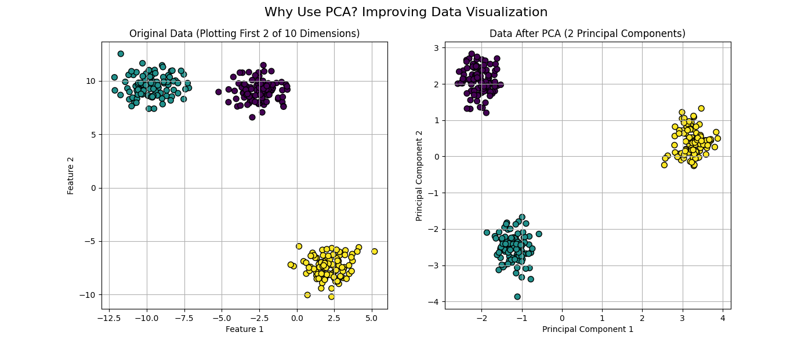
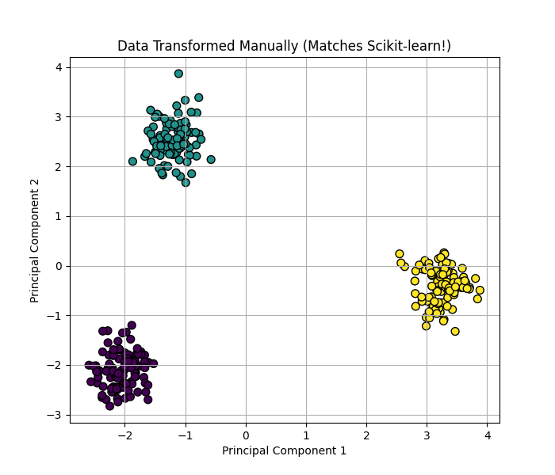

Definition :
Principal Component Analysis (PCA) is a popular dimensionality reduction technique used to transform a dataset with a large number of variables into a smaller set of new, uncorrelated variables called principal components. The key goal is to capture the maximum possible information or variance from the original data in these new components.
Why :
[Explain why PCA is used here. Ut enim ad minim veniam, quis nostrud exercitation ullamco laboris nisi ut aliquip ex ea commodo consequat.]
Working :
[Describe how PCA works here. Duis aute irure dolor in reprehenderit in voluptate velit esse cillum dolore eu fugiat nulla pariatur.]
Principal Component Analysis
Definition :
Principal Component Analysis (PCA) is a popular technique for reducing the number of features (dimensionality) in a dataset while trying to preserve as much of the important information as possible.
Why Use PCA?
PCA helps improve data visualization and can prevent models from overfitting by focusing on the most important patterns in the data.

How It Works :
PCA identifies the most significant patterns (principal components) in the data. Below is the full Python code demonstrating the step-by-step process.
import numpy as np
import matplotlib.pyplot as plt
from sklearn.datasets import make_blobs
from sklearn.preprocessing import StandardScaler
from sklearn.decomposition import PCA
# PART 1: THE "WHY"
X, y = make_blobs(n_samples=300, centers=3, n_features=10, random_state=42)
scaler = StandardScaler()
X_scaled = scaler.fit_transform(X)
pca = PCA(n_components=2)
X_pca = pca.fit_transform(X_scaled)
# PART 2: THE "HOW"
cov_matrix = np.cov(X_scaled.T)
eigenvalues, eigenvectors = np.linalg.eig(cov_matrix)
sorted_indices = np.argsort(eigenvalues)[::-1]
sorted_eigenvectors = eigenvectors[:, sorted_indices]
projection_matrix = sorted_eigenvectors[:, :2]
X_manual_pca = X_scaled.dot(projection_matrix)
# (Plotting code would be here in the actual script)
The plot below confirms our manual process matches the library's result.

Real-World Example: The Iris Dataset
This dataset has 4 features, making it impossible to graph normally. PCA projects it into 2D, revealing the 3 flower species. Hover over any point to see its original 4 measurements.
Setosa
Versicolor
Virginica